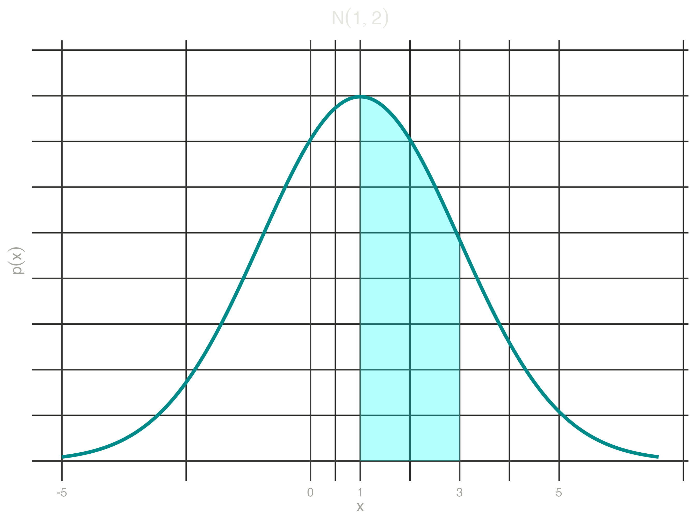
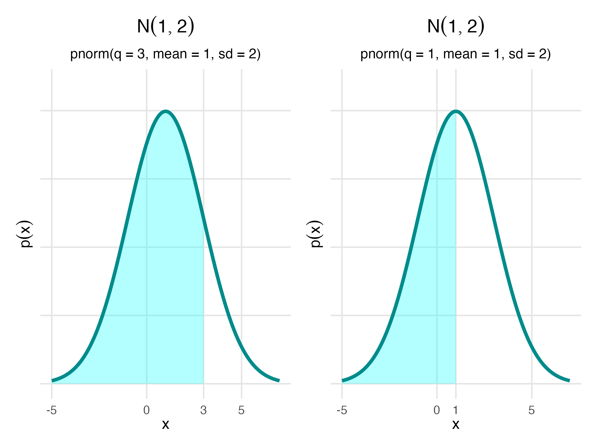
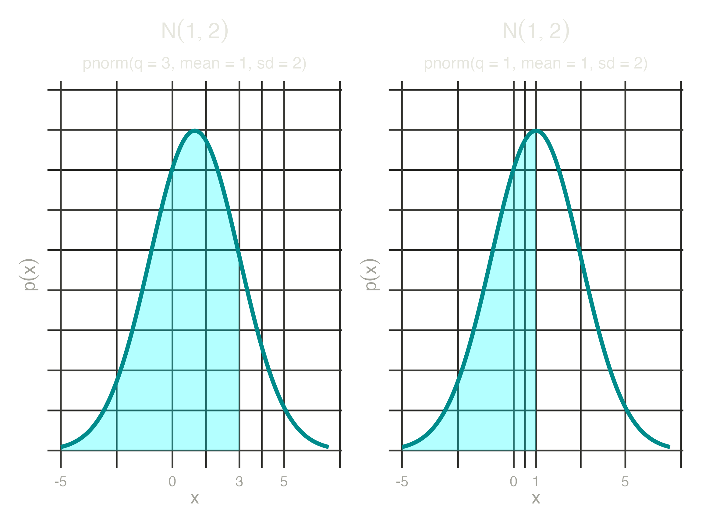
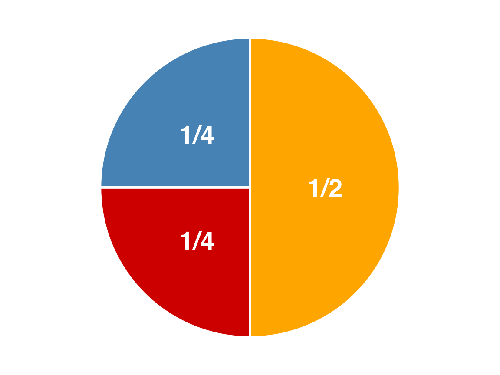
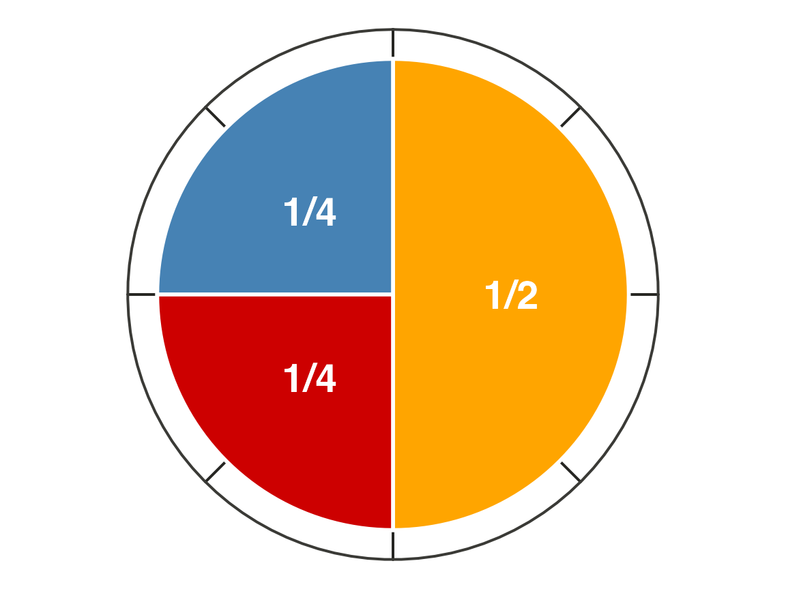

Monte Carlo (MC) simulations provide a means to model a problem and apply brute force computational power to achieve a solution - randomly simulate from a model until you get an answer. The idea is similar to what we went through in the lecture. The best way to explain is to just run through a bunch of examples, so lets go!
Make sure you not only run the code but also try to understand what is happening at each step. This will help you to understand the concept better. Read the content carefully not just the code to get the most out of this practical and ask questions if you are unsure about anything.
4.1 Integration
We will start with basic integration. If you are not familiar with the concept please refer to the wikipedia page on integration. In simple terms it is the area under a curve. In the context of continuous random variables (RVs) it is the probability of a RV falling within a certain range. You are not required to know how to perform an integration by hand, but in the context of continuous RVs you should understand how to perform an integration using MC and what it means. Throughout this exercise try to relate it back to what you saw during the lecture and the information each integral provides.
This is an extremely powerful tool and is used in many fields including Machine Learning to solve problems that are too complex to solve analytically. The basic idea is to simulate a large number of samples from a distribution and then use these samples to estimate the integral.
Suppose we have an instance of a Normal distribution with a mean of 1 and a standard deviation of 2 then we want to find the integral (area under the curve) from 1 to 3. We can write this formally using the Normal distribution function as:
#> The following objects are masked from 'package:stats':
#>
#> filter, lag
#> The following objects are masked from 'package:base':
#>
#> intersect, setdiff, setequal, union
#> Warning: Using `size` aesthetic for lines was deprecated in ggplot2
#> 3.4.0.
#> ℹ Please use `linewidth` instead.

If you have not done calculus before - do not worry. We are going to write a Monte Carlo approach for estimating this integral which does not require any knowledge of calculus!
The method relies on being able to generate samples from this distribution (the blue curve) and counting how many values fall between 1 and 3. The proportion of samples that fall in this range over the total number of samples gives the area.
4.1.1 Monte Carlo Integration
Like before we will set up a simulation, this time to estimate the integral of a Normal distribution. We will go step by step to understand the process and then we will write a function to do this for us.
First, create a new R script in Rstudio. Next we define the number of samples we will obtain. Lets start by choosing \(1,000\) samples:
n <-1000# number of samples to take
Now we use the R function rnorm to simulate \(1,000\) numbers from a Normal distribution with mean 1 and standard deviation 2:
Lets estimate the integral between 1 and 3 by counting how many samples had a value in this range. We can do this by summing the number of samples that are greater than or equal to 1 and less than or equal to 3 and dividing by the total number of samples:
# find proportion of values between 1-3mc_integral <-sum(sims >=1& sims <=3) / n
The result we get is:
print(mc_integral)
#> [1] 0.378
This is our estimate of the integral. We can compare this to the true value of the integral which we can calculate using the pnorm function in R. This is the probability of a Normal distribution falling between 1 and 3:
mc_exact <-pnorm(q =3, mean =1, sd =2) -pnorm(q =1, mean =1, sd =2)print(mc_exact)
#> [1] 0.3413447
Let’s break down the above code, to understand what is happening. The pnorm gives the integral under the Normal distribution (in this case with mean 1 and standard deviation 2) from negative infinity up to the value specified by q.
We use pnorm with q=1 and q=3 plugging in the mean and standard deviation pnorm(q=?, mean=1, sd=2). This produces the following integrals:


Therefore the difference between these gives us the integral of interest between 1 and 3.
Note
The Monte Carlo estimate is a fairly good approximation to the true value!
Note that the accuracy of the estimate will depend on the number of samples taken. The more samples taken, the more accurate the estimate will be.
exercise 4.1
MC accuracy
Let us now explore how the accuracy of the Monte Carlo estimate changes as the number of samples increases. We will repeat the above process for different numbers of samples and compare the accuracy of the estimate to the true value.
Try increasing the number of simulations and see how the accuracy improves?
Can you draw a graph of number of MC samples vs accuracy?
Ensure you write functions to do this, and make use of loops to avoid repeating code.
Tiphint
Split up the task into two parts. First, write a loop to run the simulation for different numbers of samples and store the results. Then, use ggplot2 (or base R plotting) to plot the results.
A few questions to answer:
How do you define accuracy?
How do you store the results of the simulation?
How many simulations do you need to run to get a good estimate of the accuracy?
Don’t worry if you don’t get it right the first time, you can change the parameters and try again.
Now we will consider a different problem, bust using the same techniques. Suppose we have a fair coin and we want to know the probability of getting more than 3 heads in 10 flips. This is a trivial problem using the Binomial distribution but suppose we have forgotten about this or never learned it in the first place.
Lets solve this problem with a Monte Carlo simulation. We will use the common trick of representing tails with 0 and heads with 1, then simulate 10 coin tosses 100 times and see how often that happens.
runs <-100# number of simulations to rungreater_than_three <-rep(0, runs) # vector to hold outcomes# run 100 simulationsfor (i in1:runs) {# flip a coin ten times (0 - tail, 1 - head) coin_flips <-sample(c(0, 1), 10, replace = T)# count how many heads and check if greater than 3 greater_than_three[i] <- (sum(coin_flips) >3)}# compute average over simulationspr_greater_than_three <-sum(greater_than_three) / runs
For our MC estimate of the probability \(P(X>3)\) we get
print(pr_greater_than_three)
#> [1] 0.8
which we can compare to R’s built-in Binomial distribution function:
print(pbinom(3, 10, 0.5, lower.tail =FALSE))
#> [1] 0.828125
Not bad! The Monte Carlo estimate is close to the true value.
exercise 4.2
MC Binomial
Let’s expand this once again trying to see the impact of the number of simulations on the accuracy of the estimate.
Try increasing the number of simulations and see how the accuracy improves?
Can you plot how the accuracy varies as a function of the number of simulations?
Once again, make use of functions and loops to avoid repeating code.
(Hint: see the previous section, the solution is very similar)
4.3 Monte Carlo Expectations
Let us look at a more interesting problem after understanding how MC works and we have convinced ourselves that it works and produces accurate results.
Consider the following spinner. If the spinner is spun randomly then it has a probability 0.5 of landing on yellow and 0.25 of landing on red or blue respectively.


If the rules of the game are such that landing on yellow you gain 1 point,* red* you lose 1 point and blue you gain 2 points. We can easily calculate the expected score.
Notethink
How does this relate to probabilities? What is the random variable here and what type of RV are we dealing with?
You should take out a pad of paper and construct this problem into a probability problem. This is a key skill in probability and statistics. Once you have done this, you can then write a Monte Carlo simulation to estimate the expected score.
TipConstructing the probability
The problem can be considered as an example of the expectation of a random variable. The expectation is the average value of a random variable and is a key concept in probability theory. It is defined as:
\[
E[X] = \sum_{i=1}^{n} x_i \times p_i
\]
where \(x_i\) are the values of the random variable and \(p_i\) are the probabilities of each value. The expectation is a measure of the central tendency of a random variable and is a key concept in probability theory.
This translates Let \(X\) denote the random variable associated with the score of the spin then:
We can also ask more challenging questions. Let us consider the following problem:
After 20 spins what is the probability that you will have less then 0 points?
How might we solve this?
Of course, there are methods to analytically solve this type of problem but by the time they are even explained we could have already written our simulation!
Tiphint
To solve this with a Monte Carlo simulation you need to sample from the Spinner 20 times, and return 1 if we are below 0 other wise we will return 0. We will repeat this 10,000 times to see how often it happens!
We have been using functions throughout your practical sessions. So we will look at them in a bit more detail here and build on what you have already learned.
When writing a potentially complex function, you should always start with the most basic building blocks. Here is an example function we can write to simulate one game as indicated above and return whether the number of points is less than zero.
# simulates a game of 20 spinsplay_game <-function() {# picks a number from the list (1, -1, 2)# with probability 50%, 25% and 25% twenty times results <-sample(c(1, -1, 2), 20, replace =TRUE, prob =c(0.5, 0.25, 0.25))# function returns whether the sum of all the spins is < 1return(sum(results) <0)}
4.5 Simulating from function
Now we can use this function in a loop to play the game 100 times:
runs <-100# play the game 100 timesless_than_zero <-rep(0, runs) # vector to store outcome of each gamefor (it in1:runs) {# play the game by calling the function and store the outcome less_than_zero[it] <-play_game()}
We can then compute the probability that, after twenty spins, we will have less than zero points:
The probability is very low. This is not surprising since there is only a 25% chance of getting a point deduction on any spin and a 75% chance of gaining points. Try to increase the number of simulation runs to see if you can detect any games where you do find a negative score.
This is a very basic function and can be improved in many ways. For example, you could add parameters to the function to allow for different numbers of spins or different probabilities for each colour. You could also add error checking to ensure that the input parameters are valid.
exercise 4.4
MC Expectation 2
In this exercise we will extend the above function to answer the following questions:
Modify your code to allow you to calculate the expected number of points after 20 spins.
Simulate a game in which you have a maximum of 20 spins but you go “bust” once you hit a negative score and take this into account when you compute the expected end of game score.
Add options in the game to different probabilities for each colour and different point values for each colour. There should be default values for the original game.
Experiment with different probabilities and point values to see how they affect the expected score. Create a table of results.